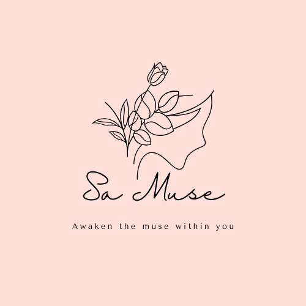
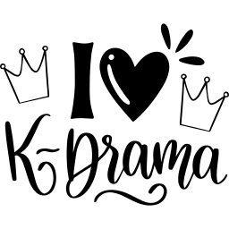

Je suis actuellement étudiante a l'Ecole Supérieure Polytechnique de Dakar en cycle ingénieur en
sécurité des systèmes d'information, un domaine qui me
passionne profondément et dans lequel je me sens pleinement épanouie.
Mon parcours a commencé avec un diplôme de technicien en Télécom et Réseau, et c'est après cette étape que j'ai décidé de me spécialiser en sécurité informatique. Ma curiosité ne s'arrête pas là : je suis également fascinée par l'intelligence artificielle, en particulier lorsqu'elle est appliquée à la sécurité, un domaine qui, selon moi, offre des perspectives très intéressantes.

En dehors de mes études, je nourris une autre passion: le crochet. J'ai transformé cette passion en une petite entreprise nommée Sa Muse : Awaken the muse within you, où je confectionne des vêtements au crochet sur commande. Cela m'a permis d'explorer ma créativité tout en gérant un business que j'adore.
En tant que personne, je me décris comme quelqu'un de très jovial, toujours animée par une grande joie de vivre. Mon empathie est l'une de mes plus grandes qualités.
.png)

Enfin, je suis une grande fan des K-dranas, un univers que j'ai découvert lors de ma première année d'université grâce à une amie, et qui m'accompagne depuis dans mes moments de détente.
Well, there you have it, now you know everything about me... 😎✌🏽️😂